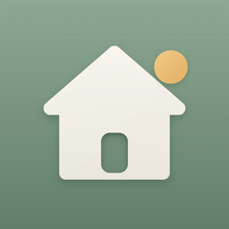

Support
HomePing: Home Maintenance for iPhone
Need help? Email support@homeping.org. Include your iPhone model and iOS version if something isn't working. You'll get a reply as soon as possible, usually within a few days.
Reminders
I'm not getting reminders
- Check iOS Settings → Notifications → HomePing → Allow Notifications is on.
- In HomePing, open Settings and check that Task reminders is on and the reminder time is right.
- Make sure the task itself has its reminder switched on.
- Focus modes can hold back notifications; check Settings → Focus.
Why only 60 reminders?
iOS limits how many notifications an app can schedule. HomePing schedules the soonest 60 and tops them up every time you open the app, so nothing is lost.
iCloud sync
My devices aren't in sync
- Both devices must be signed in to iCloud with the same Apple Account, and Sync with iCloud must be on in HomePing's Settings on each.
- In HomePing, open Settings → iCloud. The status line says what's happening, for example "Up to date", "Offline" or "iCloud storage is full".
- Changes usually arrive within seconds. Opening HomePing also checks for changes.
- If iCloud storage is full, your data stays safe on the device; free up or add storage and sync resumes.
Turning sync on or off
Settings → Sync with iCloud. The change applies the next time you open HomePing. With sync off, data stays on that device only.
Setting up a new iPhone
Install HomePing and sign in to the same Apple Account. HomePing shows "Welcome back" when your home arrives from iCloud; tap Continue with my home.
Your data
- Export: Settings → Export my data creates a JSON file you can save or share.
- Delete: Settings → Delete all data offers "Delete from this iPhone only" or "Delete everywhere" (iCloud and all your devices).
- Read the Privacy Policy.
Good to know
Suggested maintenance intervals are a starting point. Always follow your manufacturer's guidance and local requirements.